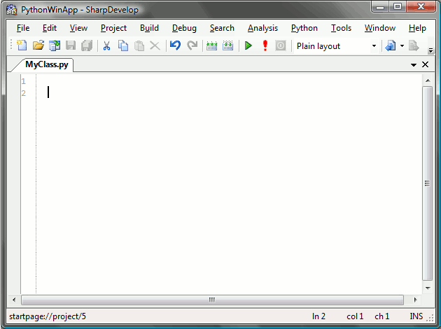

Python auto-indentation has now been added to SharpDevelop 3.1 in revision 5007. The latest SharpDevelop builds can be downloaded from the build server.
The indentation will be increased after a line ending with the colon character, such as a method declaration. After typing in a pass or return statement the indentation will be decreased on the following line.
